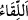

çok iyi görendir, bütün işlerine vâkıftır. Bazen Allah hikmeti gereği onun mihnet ve
sıkıntısını artırabilir, üstün kudretine rağmen onun isteğini yerine getirmeyebilir.
Şeyh Attâr şöyle der:
Coşkulu/mecnûn dîvânenin biri çıplak idi
Hak’tan bir bez istiyordu
Ey Rabbim, üzerimde bir gömlek yok,
Sen sabırlıysan da benim sabrım yok
Kendinden geçmiş o mecnuna şöyle hitâb geldi:
Sana bez mi vereyim, kefen mi?
O çaresiz mecnun adam ağzını açtı ve:
“Ey kullarını besleyip büyüten, bilirim
Zavallı insan ölmeden
Sen ona bir bez parçası bile vermezsin
Kabirde örtmek için senden bez alabilmesi için
Kişinin önce üryan ve müflis olması gerek
Bu hikâyede nefsânî isteklerden fenâya işâret vardır. Nefis Allah’ın gazabına uğramış,
yerilen vasıfları ve çirkin ahlâkıyla kaldığı sürece Allah’ın rahmetinin feyzi onun
üzerinde bulunsa da rahmete ermiş ve rezilliklerden temizlenmiş olduğu haldeki gibi
bulunmaz. İşte sülûk ehlinin hâli budur. Nefs-i emmâre ehlinden olan kişiye gelince
onun bütün nefsânî istekleri yerine gelir. O kimse istidrâcın eline düşmüştür. Allah
Teâlâ’nın kulunu zenginleştirmesinde, nimetlendirmesinde ve nimet denizinde
boğmasında büyük hikmetleri vardır. Ancak bu durum Hakk’ın tâlibleri için büyük bir
fitnedir/imtihandır. Bu hal onları mutlak sabra yöneltir.
21. Bizimle karşılaşmayı (bir gün huzûrumuza geleceklerini) ummayanlar: “Bize
ya melekler indirilmeliydi ya da Rabbimizi görmeliydik” dediler. Andolsun ki onlar
kendileri hakkında kibire kapılmışlar ve azgınlıkta pek ileri gitmişlerdir.
“Bizimle karşılaşmayı ummayanlar:” “ nın aslı, sevinçli bir şeyin
nın aslı, sevinçli bir şeyin
gerçekleşmesini gerektiren bir zandır. “ “ ise göz ve basîretle hissetmekle olan
idrak hakkında kullanılır. Allah ile karşılaşmak kıyâmetten ve O’na dönmekten, yâni
Allah’tan başka hâkim ve mâlikin olmadığı yere dönmekten ibârettir. Buna göre ifâdenin
mânâsı: ‘Bize dönüşü beklemeyenler, yâni yeniden diriltilmeyi, haşr, hesâb ve
yapılanların karşılığının verilmesini inkâr edenler:’ şeklindedir. Bunlar Mekke halkının
kâfirleridir.